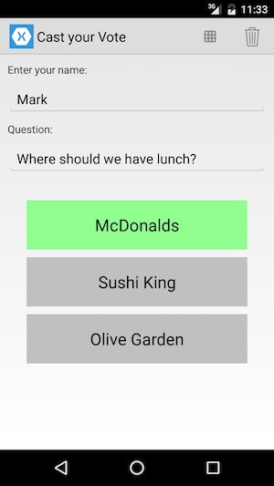
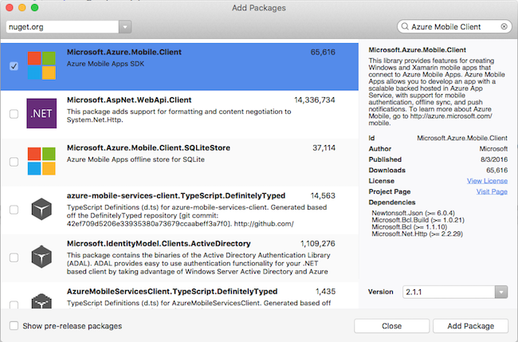

Duration
10 minutes
Goals
In this lab exercise, you will modify an existing Xamarin.Forms application to add support for utilizing an Azure mobile service. You can use any mix of the platform projects depending on your development environment (Mac or Windows). All variations are supplied (iOS, Android, UWP, Windows 8.1 and Windows Phone 8.1).
Assets
There is both a starter application which has the UI all built out and a completed version of the exercise in the Part 01 Resources folder.
Challenge
There are several steps we will take for this lab.
- Run and explore the code for the starter project.
- Add the Microsoft.Azure.Mobile.Client NuGet package to all of the platform-specific projects and the Data project.
- Initialize the Azure client SDK in your iOS and Android platform projects.
- Create a new version of the
ISurveyQuestionServiceinterface which will interact with Azure using the client SDK. - Stub out the retrieval and update methods of the interface and change the MainPage.xaml.cs file to use your new service implementation.
Steps
Explore the Starter Solution
To start with, let's open and explore the starter solution. The application is a Xamarin.Forms based survey/voting application that will use Azure as the database. The starting project has a mocked out service which does all the work locally so you can see it run before we start anything.
- Set your preferred platform-specific project as the startup project. Any of them will work.
- Hint: For Windows projects, you will likely need to select a configuration other than "AnyCPU".
- Build and run the application to see it work. 
- Expand the solution - it has 8 projects in it.
| Project | Description |
|---|---|
| CastMyVote | This is the core Xamarin.Forms view PCL shared assembly. It contains the Page definitions (one for the main page and one for a results page), the models and the code which will interact with the service. Currently, it has a mocked out implementation that does everything with local, hard-coded data. The main thing of interest here is the ISurveyQuestionService interface which you will implement to connect to the Azure service.
|
| CastMyVote.Droid | The Xamarin.Android platform-specific (head) project. |
| CastMyVote.iOS | The Xamarin.iOS platform-specific (head) project. You will need a Mac host to run this application. |
| CastMyVote.UWP | The Windows 10 desktop/phone platform-specific (head) project. You will need Visual Studio and Windows to run this project. On macOS, it will be disabled. |
| CastMyVote.Windows | The Windows 8.1 desktop platform-specific (head) project. You will need Visual Studio and Windows to run this project. On macOS, it will be disabled. |
| CastMyVote.WinPhone | The Windows 8.1 phone platform-specific (head) project. You will need Visual Studio and Windows to run this project. On macOS, it will be disabled. |
Add the Azure NuGet references
As a starting point, we need the Azure client libraries in our projects. This will allow us to connect to Azure and interact with the exposed table endpoints.
- Add the Microsoft.Azure.Mobile.Client NuGet package to all of the projects.
- Visual Studio will let you do this through a single dialog, Visual Studio for Mac requires that you add the package to each project individually. 
Initialize the Azure library
Android and iOS both must initialize the Azure client library by adding a line of code into the initialization of the app. This code must be done in the platform-specific projects as the method isn't available in the PCL profile. You only need to do this for Android and iOS - and only if you plan to run these platforms.
Android
- Open the MainActity.cs file in the Xamarin.Android project. Since this is a Xamarin.Forms app, the main Activity only launches once per app-launch and we can do our initialization here.
- Add a call to
Microsoft.WindowsAzure.MobileServices.CurrentPlatform.Init ();in theOnCreateoverride - you can place it just before theForms.Initcall.
iOS
- Open the AppDelegate.cs file in the Xamarin.iOS project.
- Add a call to
Microsoft.WindowsAzure.MobileServices.CurrentPlatform.Init ();in theFinishedLaunchingoverride - you can place it just before theForms.Initcall.
Create a new service class to interact with Azure
The Data assembly has an interface defined to interact with our survey data service. Currently, it's implemented with a mock class for local testing. Our goal is to eventually replace this with a complete implementation that talks to Azure (or some other online cloud provider).
- Open the ISurveyQuestionService.cs file in the Interfaces folder of the CastMyVote.Data project. This is the interface we need to implement.
- Let's start by creating a new class that implements the interface.
- Add a new source file named "AzureSurveyService.cs" in the Services folder.
- Have it implement
ISurveyQuestionService- you can use the built-in IDE support to add each required method stub. We won't be actually providing an implementation yet, but all the methods need to be present. Just leave thethrow new NotImplementedException();in place for now.
Create a MobileServiceClient
To interact with an Azure service, you use a MobileServiceClient object. We'll create one and place it into our new AzureSurveyService class.
- Add a new private field of type
MobileServiceClient. - Add a new private method named Initialize, create a mobile service client object and assign it to your field. You will need the URL of the Azure service to pass into the constructor. We are working with a pre-built service (actually it's the same service built in AZR110 if you want to use your version). The URL to the pre-built server is: https://xamu-voter.azurewebsites.net.
- Add a check into the
Initializemethod to see if theMobileServiceClienthas been created (non-null) and if so, return. We want to be able to call this method multiple times, but only have the logic get executed once. - Next, add a call to the
Initializemethod into each of your implementation methods - we will create it the first time we actually use the object (vs. when it is created).
Replace the service mock
Now, let's use our new Azure service!
- Open the MainPage.xaml.cs file. It allocates an
ISurveyQuestionServiceas a field in the class. Replace theMockSurveyQuestionServiceinstance with a newAzureSurveyServiceinstance.
- Run the application - it should now fail and display a message indicating that the called method is not implemented. However, we will have created our Azure connection and are now setup to start implementing data access methods!

Summary
In this exercise, you added support to an existing Xamarin.Forms application to access an Azure mobile service.